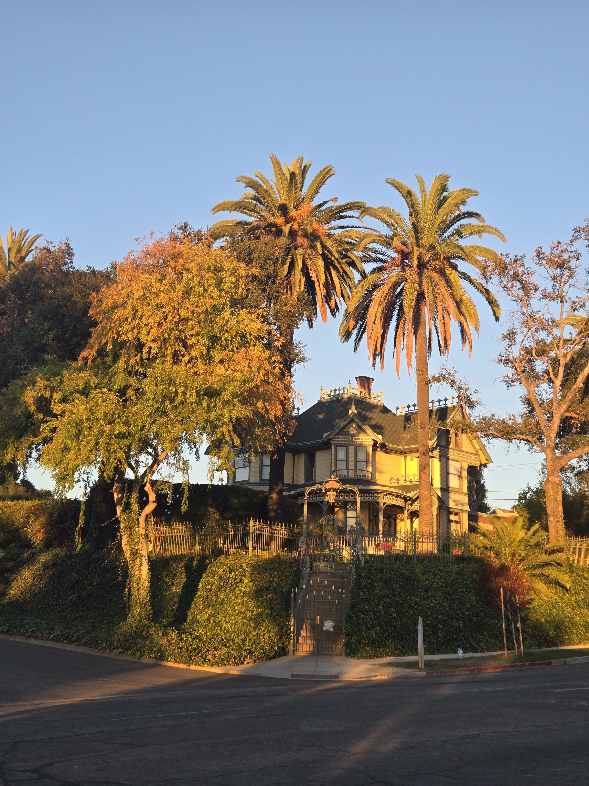
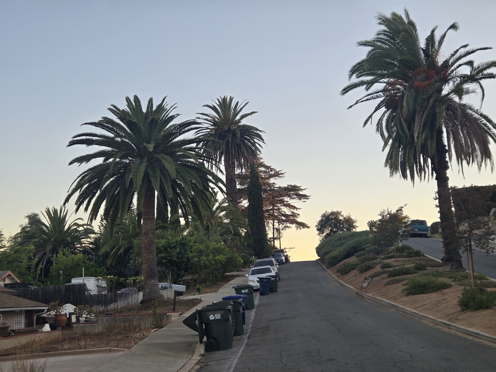
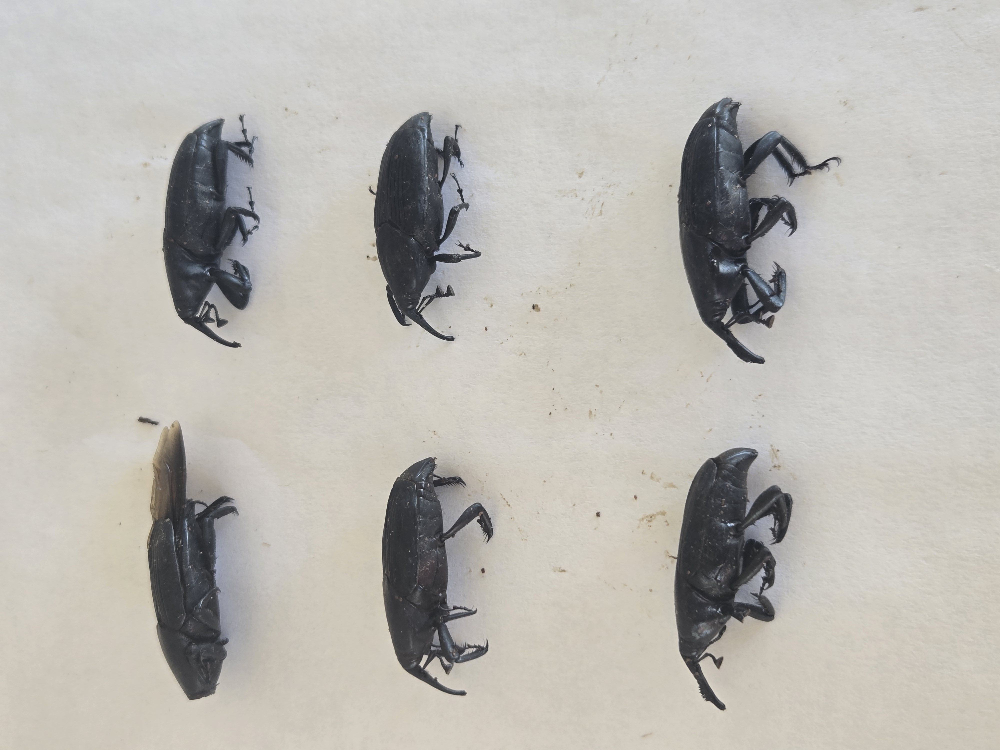
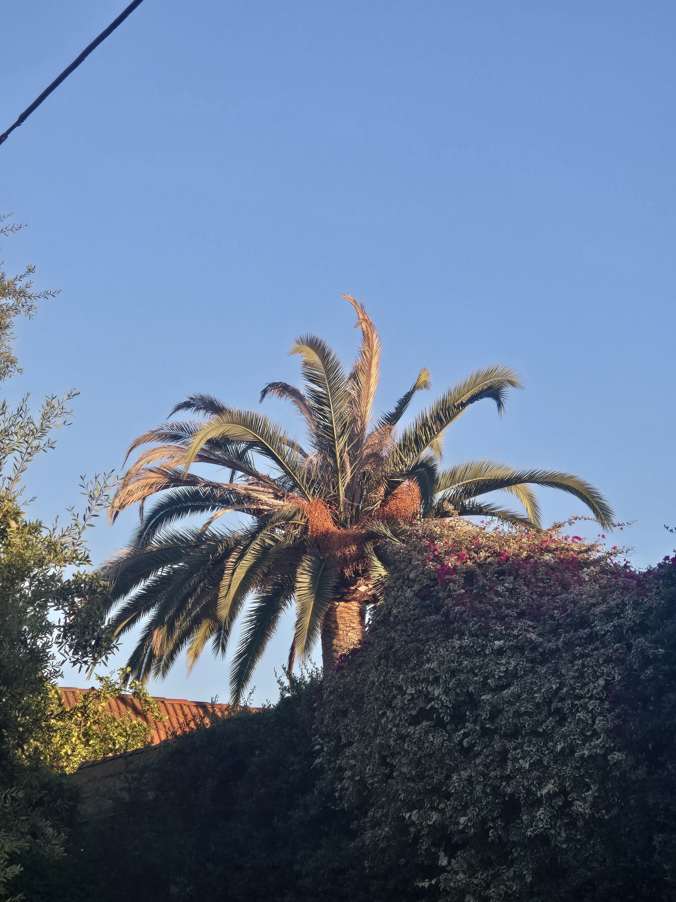

Public and civic stakeholders
Palm-focused records for defined public properties, corridors, districts, or implementation priorities.
Municipal and managed-property support
Specialized palm-focused field information and records for municipalities, public agencies, historic districts, managed properties, institutions, consultants, and contractors responsible for mature palms.
Owner-Led Palm Stewardship
Owner-led South American palm weevil prevention and licensed treatment for valuable mature palms, with assessments, recurring care, decline response, and qualified-contractor coordination.
California Pest Control Business License No. 47756California Qualified Applicator License No. 175295Category B — Landscape MaintenanceInsured
Treatment recommendations and applications remain subject to the pesticide label, applicable law, site conditions, and agreed scope.
Who this is for
Projects are scoped for cities and public agencies, urban forestry teams, parks and public works departments, historic districts, HOAs, commercial portfolios, schools and campuses, landscape architects, arborists, consultants, and palm-maintenance contractors.
Palm-focused records for defined public properties, corridors, districts, or implementation priorities.
Repeatable information for boards, managers, campuses, commercial owners, and facilities teams.
A consistent palm record that can support planning, communication, and documented follow-through.
What SDPP documents
The agreed data structure can connect a palm’s identity, place, visible condition, work history, and next review.
Stable palm IDs, species records where supportable, location descriptions, and requested spreadsheet- or GIS-ready fields defined by contract.
Dated overview, crown, trunk, site, and visible-condition photographs where access safely permits.
Defined observation categories, priority or escalation flags, limitations, and recommended next actions.
Monitoring comparisons, treatment history when supplied, work status, removals, documented loss, and replacement tracking.
Example deliverables
Deliverables are selected for the project rather than implied as a universal package.
Stable IDs, species and location fields, dated photographs, observation categories, and current status.
Grouped findings, escalation flags, maintenance priorities, unresolved items, and planned revisit points.
Before-and-after photographs, supplied service information, visible completion, and discrepancies within scope.
Spreadsheet-ready tables and, when specifically requested and contractually defined, fields prepared for GIS use.
Field workflow
A concise workflow keeps data collection tied to the decisions it is intended to support.
Confirm geography, palm population, fields, access, stakeholders, and required outputs.
Assign stable IDs and record location, species fields, photographs, and visible conditions.
Separate routine items, monitoring needs, escalation flags, and evidence gaps.
Deliver palm-level records, portfolio summaries, limitations, and recommended next actions.
Add repeat monitoring, work verification, removal, loss, or replacement records when commissioned.
UFMP and urban-forest implementation support
SDPP can provide palm-focused inventory fields, condition documentation, monitoring records, priority information, and implementation follow-through that may support an Urban Forest Management Plan or consultant-led program.
SDPP does not represent this service as preparation of a complete municipal Urban Forest Management Plan, a formal tree-risk assessment, laboratory diagnosis, structural engineering, or municipal-code determination.
Municipal context
San Diego Palm Protection submitted mature-palm documentation for consideration during the City of Escondido Urban Forest Management Plan process.
This statement describes a submission for consideration. It does not state or imply City endorsement, partnership, selection, approval, or adoption.
Approved civic documentation resource
A limited owner/SDPP photographic record showing how stable palm IDs, dated images, visible-condition notes, and loss chronology can support urban-forest and multi-palm decisions.
See how stable palm IDs, dated photographs, and evidence boundaries support reviewable records.
Old Escondido's mature Canary Island date palms contribute height, continuity, and a visible sense of place across residential and streetside views. Once a palm changes substantially or is removed, memory alone cannot recover its earlier condition. Dated photographs and stable identifiers preserve a reviewable baseline.
The approved sample demonstrates a practical record structure for several palms: one stable ID per palm, repeatable whole-palm and crown views, visible-condition notes kept separate from interpretation, and a chronology for later change, contractor work, removal, loss, or replacement. The same structure can help owners and civic stakeholders compare records without confusing private-property observations with public tree assets.
South American palm weevil pressure is documented on John's own Old Escondido property through approved owner photographs of captured adult weevils. That owner-property record is context only: it is not evidence that SAPW caused decline at another photographed location.
This is a limited owner/SDPP photographic record, not a complete property or citywide inventory. It does not diagnose the cause of decline in photographed palms and does not claim City of Escondido endorsement, partnership, selection, approval, adoption, affiliation, or authority.
A useful next step is to define the study boundary, assign stable palm IDs, identify approved photographic viewpoints, and record what is directly visible. Later observations can then be compared against the baseline and used to guide monitoring, protection, treatment, or decline response.
I provide owner-led palm stewardship for individual palms and multi-palm properties, including recurring health observation, preventive protection, appropriate treatment, documentation, planning, and coordination when outside work is needed.




Large-property and civic documentation capability
Multi-palm decisions become clearer when every image, observation, work record, and outcome stays attached to the correct palm. This limited Old Escondido sample demonstrates a records method built around stable palm IDs, dated photographic baselines, visible-condition notes, priority context, and change-over-time chronology.
The method can support an owner, HOA, community property, property manager, contractor team, or civic stakeholder who needs a reviewable record. It can distinguish ownership contexts, preserve approved evidence, and identify what is observed, reported, uncertain, removed, or replaced.
This material is a limited owner/SDPP photographic record and does not claim City endorsement.
Palm Journal fragment
Old Escondido's mature Canary Island date palms are more than isolated specimens. Their crowns repeat across homes, managed properties, and street views, giving the neighborhood a landscape pattern that cannot be replaced quickly after loss.
A photographic baseline preserves what was present. Stable palm IDs, dated whole-palm and crown views, and later comparison photographs make visible change easier to review without turning a limited walk into a complete inventory or a photograph into a diagnosis.
South American palm weevil pressure is documented on John's own Old Escondido property through approved photographs of captured adult weevils. That evidence belongs to the owner's property record. It does not establish SAPW as the cause of decline in another photographed palm.
The Las Palmas documented-loss chronology shows why records matter: visible change, attempted notification, removal, and the landscape left afterward can remain reviewable even when the cause is uncertain.
This is independent owner/SDPP civic documentation. No City endorsement or authority is claimed.
Related resources
Private inquiry
Tell me about the property, the palms, and what you are responsible for. I work with managed palm portfolios, large estates, and homeowners protecting important mature palms.